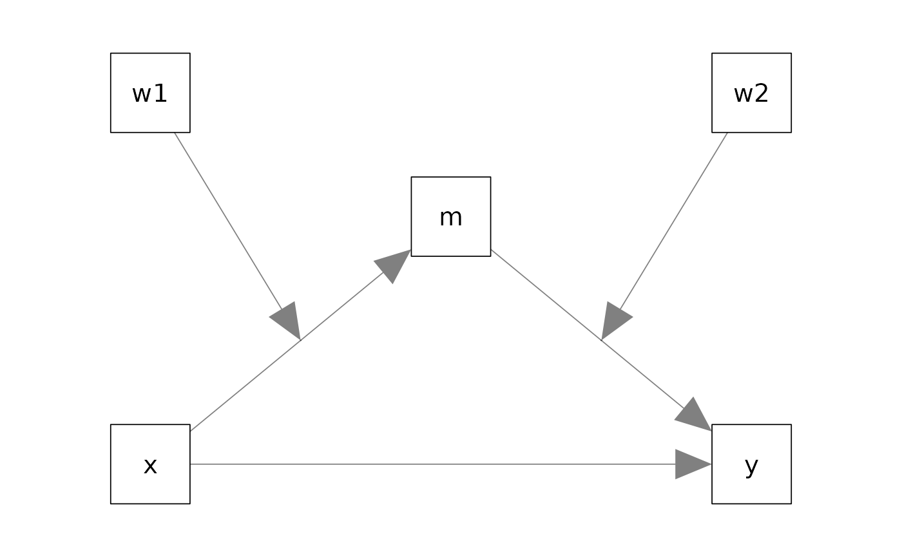
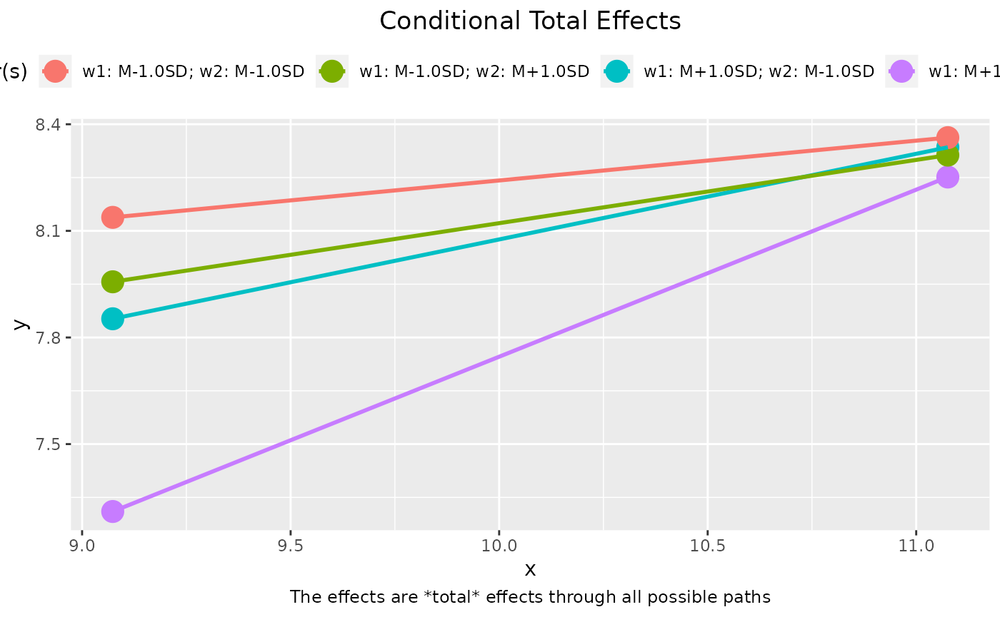
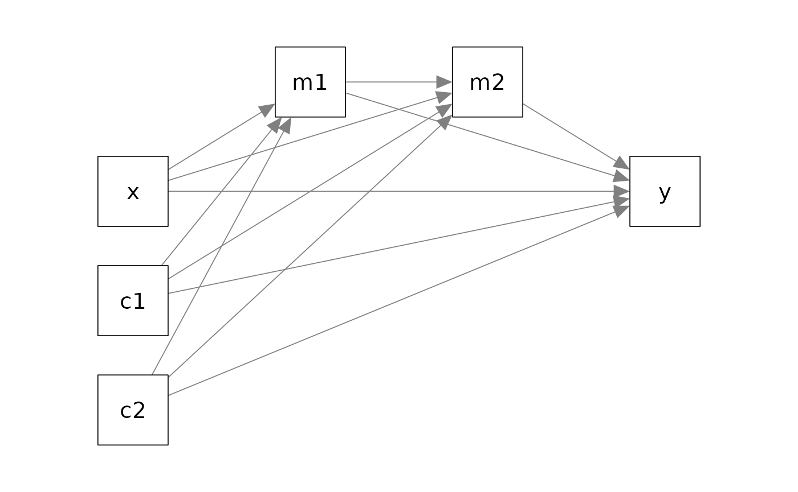

Introduction
This article is a brief illustration on how manymome functions are used in some typical cases. The model is intended to be simple (though with two moderators). See the section Other Cases for other models supported, and how to use the function for models fitted by structural equation modelings using lavaan::sem(), including models with latent variables.
Moderated Mediation by Regression
This is the sample dataset comes with the package:
library(manymome)
dat <- data_med_mod_ab
print(head(dat), digits = 3)
#> x w1 w2 m y c1 c2
#> 1 9.27 4.97 2.66 3.46 8.80 9.26 3.14
#> 2 10.79 4.13 3.33 4.05 7.37 10.71 5.80
#> 3 11.10 5.91 3.32 4.04 8.24 10.60 5.45
#> 4 9.53 4.78 2.32 3.54 8.37 9.22 3.83
#> 5 10.00 4.38 2.95 4.65 8.39 9.58 4.26
#> 6 12.25 5.81 4.04 4.73 9.65 9.51 4.01Suppose this is the model being fitted:

Estimating the Coefficients
This is a moderated mediation model with
a mediation path
x -> m -> y, andtwo moderators:
x -> mmoderated byw1andm -> ymoderated byw2.
The effects of interest are the conditional indirect effects: the indirect effects from x to y through m for different levels of w1 and w2.
The effects in this moderated mediation model can be estimated by multiple regression approach in R using lm().
First, m is regressed on x, w1, and their interaction:
lm_m <- lm(m ~ x * w1, dat)Second, y is regressed on m, w2, their interaction, and x:
lm_y <- lm(y ~ m * w2 + x, dat)These are the coefficients:
printCoefmat(summary(lm_m)$coefficients, digits = 3, signif.legend = FALSE)
#> Estimate Std. Error t value Pr(>|t|)
#> (Intercept) 11.6273 4.8501 2.40 0.018 *
#> x -0.6342 0.5006 -1.27 0.208
#> w1 -2.2551 0.9654 -2.34 0.022 *
#> x:w1 0.1998 0.0958 2.09 0.040 *
printCoefmat(summary(lm_y)$coefficients, digits = 3, signif.legend = FALSE)
#> Estimate Std. Error t value Pr(>|t|)
#> (Intercept) 8.1648 1.2779 6.39 6.2e-09 ***
#> m -0.0936 0.2763 -0.34 0.7357
#> w2 -0.8784 0.3409 -2.58 0.0115 *
#> x 0.0599 0.0892 0.67 0.5038
#> m:w2 0.1926 0.0726 2.65 0.0094 **Both moderation effects are significant. Because the indirect effect is moderated on both stages (x -> m and m -> y), the magnitude of the indirect effect depends on w1 and w2. The indirect effect conditional on the moderators is called the conditional indirect effect. Moreover, like a mediation effect without moderation, its confidence interval can be formed by nonparametric bootstrapping.
To compute conditional indirect effects and form bootstrap confidence intervals, we can use cond_indirect_effects().
Estimating Conditional Indirect Effects
This is the call to compute the conditional indirect effects:
out_lm <- cond_indirect_effects(wlevels =c("w1", "w2"),
x = "x",
y = "y",
m = "m",
fit = lm2list(lm_m, lm_y),
boot_ci = TRUE,
R = 500,
seed = 43143)These are the major arguments:
-
wlevels: The vector of the names of the moderators. -
x: The name of the predictor. -
y: The name of the outcome variable. -
m: The name of the mediator, or a vector of names if the pathway has more than one mediator. -
fit: The list of the output oflm(). -
boot_ci: Set toTRUEto request bootstrapping confidence intervals. Default isFALSE. -
R: The number of bootstrap samples. Only 500 bootstrap samples for illustration. SetRto 2000 or even 5000 in real research. -
seed: The seed for the random number generator.
This is the output:
out_lm
#>
#> == Conditional indirect effects ==
#>
#> Path: x -> m -> y
#> Conditional on moderator(s): w1, w2
#> Moderator(s) represented by: w1, w2
#>
#> [w1] [w2] (w1) (w2) ind CI.lo CI.hi Sig m~x y~m
#> 1 M+1.0SD M+1.0SD 6.173 4.040 0.410 0.106 0.745 Sig 0.599 0.685
#> 2 M+1.0SD M-1.0SD 6.173 2.055 0.181 -0.001 0.437 0.599 0.302
#> 3 M-1.0SD M+1.0SD 4.038 4.040 0.118 -0.089 0.398 0.173 0.685
#> 4 M-1.0SD M-1.0SD 4.038 2.055 0.052 -0.041 0.222 0.173 0.302
#>
#> - [CI.lo to CI.hi] are 95.0% percentile confidence intervals by
#> nonparametric bootstrapping with 500 samples.
#> - The 'ind' column shows the indirect effects.
#> - 'm~x','y~m' is/are the path coefficient(s) along the path conditional
#> on the moderators.For two or more moderators, the default levels for numeric moderators are one standard deviation below mean and one standard deviation above mean. For two moderators, there are four combinations. As shown above, among these levels, the indirect effect from x to y through m is significant only when both w1 and w2 are one standard deviation above mean. The indirect effect at these levels of w1 and w2 are 0.410, with 95% bootstrap confidence interval [0.106, 0.745].
Standardized Conditional Indirect Effects
To compute the conditional indirect effects, we can standardize only the predictor (x), only the outcome (y), or both.
To standardize x, set standardized_x to TRUE. To standardize y, set standardized_y to TRUE. To standardize both, set both standardized_x and standardized_y to TRUE.
This is the result when both x and y are standardized:
out_lm_stdxy <- cond_indirect_effects(wlevels =c("w1", "w2"),
x = "x",
y = "y",
m = "m",
fit = list(lm_m, lm_y),
boot_ci = TRUE,
R = 500,
seed = 43143,
standardized_x = TRUE,
standardized_y = TRUE)
out_lm_stdxy
#>
#> == Conditional indirect effects ==
#>
#> Path: x -> m -> y
#> Conditional on moderator(s): w1, w2
#> Moderator(s) represented by: w1, w2
#>
#> [w1] [w2] (w1) (w2) std CI.lo CI.hi Sig m~x y~m ind
#> 1 M+1.0SD M+1.0SD 6.173 4.040 0.412 0.115 0.700 Sig 0.599 0.685 0.410
#> 2 M+1.0SD M-1.0SD 6.173 2.055 0.182 -0.002 0.380 0.599 0.302 0.181
#> 3 M-1.0SD M+1.0SD 4.038 4.040 0.119 -0.088 0.400 0.173 0.685 0.118
#> 4 M-1.0SD M-1.0SD 4.038 2.055 0.052 -0.042 0.226 0.173 0.302 0.052
#>
#> - [CI.lo to CI.hi] are 95.0% percentile confidence intervals by
#> nonparametric bootstrapping with 500 samples.
#> - std: The standardized indirect effects.
#> - ind: The unstandardized indirect effects.
#> - 'm~x','y~m' is/are the path coefficient(s) along the path conditional
#> on the moderators.The standardized indirect effect when both w1 and w2 are one standard deviation above mean is 0.412, with 95% bootstrap confidence interval [0.115, 0.700].
Plotting the Conditional Total Effects
The output of cond_indirect_effects() is a cond_indirect_effects-class object with a plot method, which plot the total effect along a path, conditional on different levels of the moderators:
plot(out_lm)
By default, the two end points of each line are one standard deviation below and one standard above this mean of the predictor (x).
The plot reveals patterns not apparent from the conditional effects. Although the indirect effect does increase when either w1 or w2 increases, the coefficients of w1 (-2.2551) and w2 (-0.8784) are both negative. Therefore, the combined effects of the increases of w1 and w2 decreases y and move the line downward.
Options to customize the plot can be found on the help page of plot.cond_indirect_effects().
Mediation Only
The package can also be used for a mediation model.
This is the sample dataset comes with the package:
library(manymome)
dat <- data_serial
print(head(dat), digits = 3)
#> x m1 m2 y c1 c2
#> 1 12.12 20.6 9.33 9.00 0.109262 6.01
#> 2 9.81 18.2 9.47 11.56 -0.124014 6.42
#> 3 10.11 20.3 10.05 9.35 4.278608 5.34
#> 4 10.07 19.7 10.17 11.41 1.245356 5.59
#> 5 11.91 20.5 10.05 14.26 -0.000932 5.34
#> 6 9.13 16.5 8.93 10.01 1.802727 5.91Suppose this is the model being fitted, with c1 and c2 the control variables.

Estimating Parameters
These coefficients can be estimated by three regression models:
"m1 ~ x + c1 + c2 m2 ~ m1 + x + c1 + c2 y ~ m2 + m1 + x + c1 + c2
lm_m1 <- lm(m1 ~ x + c1 + c2, dat)
lm_m2 <- lm(m2 ~ m1 + x + c1 + c2, dat)
lm_y <- lm(y ~ m2 + m1 + x + c1 + c2, dat)These are the coefficients:
printCoefmat(summary(lm_m1)$coefficients, digits = 3, signif.legend = FALSE)
#> Estimate Std. Error t value Pr(>|t|)
#> (Intercept) 10.8157 1.1438 9.46 2.2e-15 ***
#> x 0.8224 0.0942 8.73 8.0e-14 ***
#> c1 0.1715 0.0907 1.89 0.062 .
#> c2 -0.1889 0.0928 -2.04 0.045 *
printCoefmat(summary(lm_m2)$coefficients, digits = 3, signif.legend = FALSE)
#> Estimate Std. Error t value Pr(>|t|)
#> (Intercept) 3.5194 1.5868 2.22 0.0289 *
#> m1 0.4208 0.1019 4.13 7.8e-05 ***
#> x -0.1161 0.1260 -0.92 0.3591
#> c1 0.2775 0.0922 3.01 0.0033 **
#> c2 -0.1619 0.0946 -1.71 0.0902 .
printCoefmat(summary(lm_y)$coefficients, digits = 3, signif.legend = FALSE)
#> Estimate Std. Error t value Pr(>|t|)
#> (Intercept) 9.4679 3.6090 2.62 0.010 *
#> m2 0.5208 0.2275 2.29 0.024 *
#> m1 -0.4353 0.2454 -1.77 0.079 .
#> x 0.4929 0.2806 1.76 0.082 .
#> c1 0.0988 0.2140 0.46 0.645
#> c2 -0.0960 0.2130 -0.45 0.653Estimating Indirect Effects
indirect_effect() can be used to estimate the indirect effect and form its bootstrapping confidence interval along a path in a model that starts with any variable (predictor), ends with any variable (outcome variable), through any variable(s) (mediator(s)).
For example, this is the call for the indirect effect from x to y through m1 and m2:
out_med <- indirect_effect(x = "x",
y = "y",
m = c("m1", "m2"),
fit = list(lm_m1, lm_m2, lm_y),
boot_ci = TRUE,
R = 500,
seed = 43143)The main arguments are:
-
x: The name of the predictor. The start of the pathway. -
y: The name of the outcome variable. The end of the pathway -
m: The name of the mediator, or the vector of names of the mediators if the pathway has more than one mediator. -
fit: The list of the output oflm(). -
boot_ci: Set toTRUEto request bootstrapping confidence intervals. Default isFALSE. -
R: The number of bootstrap samples. Only 500 bootstrap samples for illustration. SetRto 2000 or even 5000 in real research. -
seed: The seed for the random number generator.
This is the output:
out_med
#>
#> == Indirect Effect ==
#>
#> Path: x -> m1 -> m2 -> y
#> Indirect Effect 0.180
#> 95.0% Bootstrap CI: [0.034 to 0.396]
#>
#> Computation Formula:
#> (b.m1~x)*(b.m2~m1)*(b.y~m2)
#> Computation:
#> (0.82244)*(0.42078)*(0.52077)
#>
#> Percentile confidence interval formed by nonparametric bootstrapping
#> with 500 bootstrap samples.
#>
#> Coefficients of Component Paths:
#> Path Coefficient
#> m1~x 0.822
#> m2~m1 0.421
#> y~m2 0.521The indirect effect from x to y through m1 and m2 is 0.180, with a 95% confidence interval of [0.034, 0.396], significantly different from zero (p < .05).
Standardized Indirect Effect
To compute the indirect effect with the predictor standardized, set standardized_x to TRUE. To compute the indirect effect with the outcome variable standardized, set standardized_y to TRUE. To compute the (completely) standardized indirect effect, set both standardized_x and standardized_y to TRUE.
This is the call to compute the (completely) standardized indirect effect:
out_med_stdxy <- indirect_effect(x = "x",
y = "y",
m = c("m1", "m2"),
fit = list(lm_m1, lm_m2, lm_y),
boot_ci = TRUE,
R = 500,
seed = 43143,
standardized_x = TRUE,
standardized_y = TRUE)
out_med_stdxy
#>
#> == Indirect Effect ==
#>
#> Path: x -> m1 -> m2 -> y
#> Indirect Effect 0.086
#> 95.0% Bootstrap CI: [0.017 to 0.183]
#>
#> Computation Formula:
#> (b.m1~x)*(b.m2~m1)*(b.y~m2)*sd_x/sd_y
#> Computation:
#> (0.82244)*(0.42078)*(0.52077)*(0.95489)/(2.00967)
#>
#> Percentile confidence interval formed by nonparametric bootstrapping
#> with 500 bootstrap samples.
#>
#> Coefficients of Component Paths:
#> Path Coefficient
#> m1~x 0.822
#> m2~m1 0.421
#> y~m2 0.521
#>
#> NOTE: The effects of the component paths are from the model, not standardized.The indirect effect from x to y through m1 and m2 is 0.086, with a 95% confidence interval of [0.017, 0.183], significantly different from zero (p < .05).
Estimating Indirect Effects For Any Pathways
indirect_effect() can be used for the indirect effect in any pathway in a path model. There is no need to specify the pathway when doing the regression analysis.
For example, suppose we want to estimate and test the indirect effect from x through m2 to y, bypassing m1, simply set x to "x", y to "y", and m to "m2":
out_x_m2_y <- indirect_effect(x = "x",
y = "y",
m = "m2",
fit = list(lm_m1, lm_m2, lm_y),
boot_ci = TRUE,
R = 500,
seed = 43143)
out_x_m2_y
#>
#> == Indirect Effect ==
#>
#> Path: x -> m2 -> y
#> Indirect Effect -0.060
#> 95.0% Bootstrap CI: [-0.232 to 0.097]
#>
#> Computation Formula:
#> (b.m2~x)*(b.y~m2)
#> Computation:
#> (-0.11610)*(0.52077)
#>
#> Percentile confidence interval formed by nonparametric bootstrapping
#> with 500 bootstrap samples.
#>
#> Coefficients of Component Paths:
#> Path Coefficient
#> m2~x -0.116
#> y~m2 0.521The indirect effect along this path is not significant.
Similarly, indirect effects from m1 through m2 to y or from x through m1 to y can also be tested by setting the three arguments accordingly.
This also means that the model can have more than one predictor and more than one outcome variable. For example, c1 and c2 can be other predictors in the model, and they may point to only one of the mediators. The model can also have more than one outcome variable. indirect_effect() works by extracting the path coefficients and compute their product. Therefore, it does not require users do anything in advance in fitting the models and also has not limit on the form of the models. indirect_effect() can be used as long as the indirect effect computed as the product of the component paths is meaningful.
Fit the models first, and explore as many pathways as we want.
Other Cases
The following articles illustrate other uses of manymome (to be prepared):
- Models estimated by multiple regression:
- Moderated mediation models with categorical and numeric moderators.
- Moderated mediation models with both categorical and numeric moderators.
- Parallel mediation models.
- Complex mediation models.
- Models fitted by structural equation modeling using
lavaan::sem():- Moderated mediation models with numeric moderators.
- Moderated mediation models with categorical moderators.
- Moderated mediation models with both numeric and categorical moderators.
- Complex mediation models.
- Indirect effects between latent factors.
- Models with missing data.
Moderation-Only Models
Although cond_indirect_effects() can also be used for a moderated regression model without mediators, there are other packages specifically for this model. For example, stdmod::cond_effect() can be used to compute the conditional effects, and stdmod::cond_effect_boot(), when used with stdmod::std_selected(), can be used to form bootstrap confidence intervals for standardized conditional effects. visreg::visreg() and stdmod::plotmod() can be used to plot conditional effects in a moderated regression model. Interested researchers can check the package stdmod and and visreg.
(Disclosure: stdmod is also developed by the maintainer of manymome.)